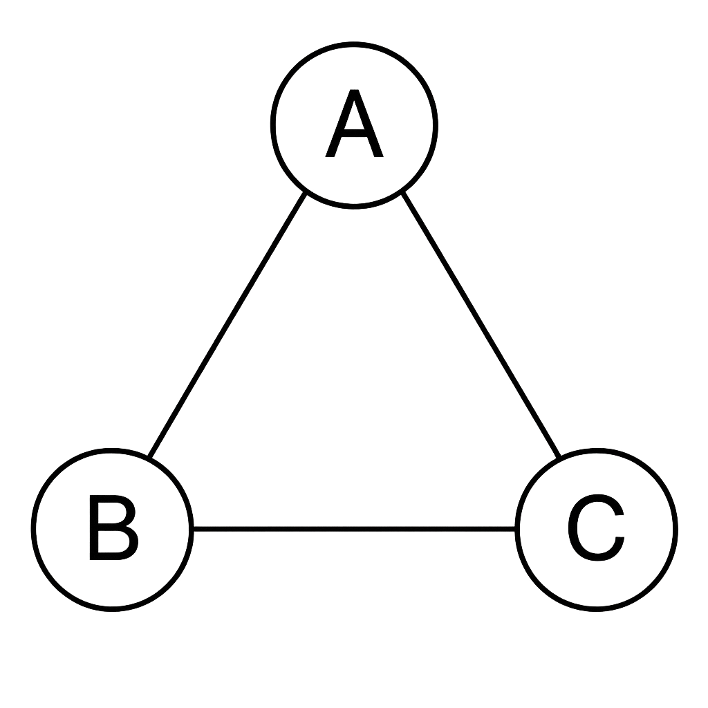
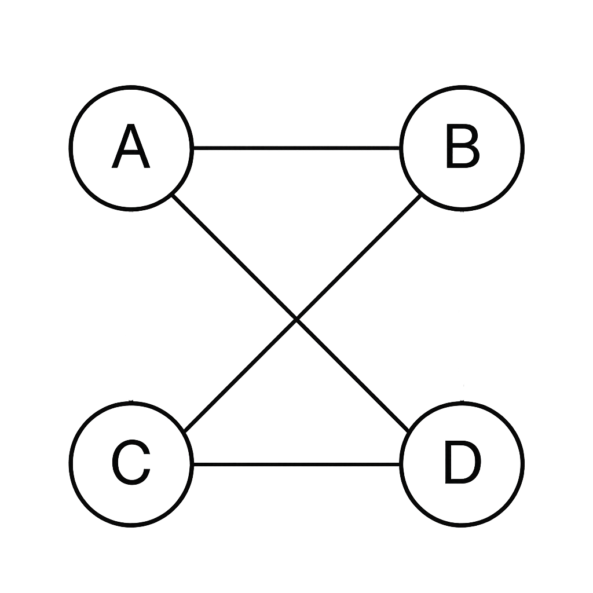

Un graf este o structură matematică formată din două mulțimi: o mulțime de vârfuri și o mulțime de muchii. Vârfurile sunt elementele fundamentale, iar muchiile sunt conexiunile dintre ele. Grafurile pot fi neorientate (muchiile nu au sens) sau orientate (muchiile au o direcție). Astfel, formal spus, un graf se poate defini drept G = (V, E), unde V este mulțimea vârfurilor, iar E mulțimea muchiilor.
Gradul unui vârf reprezintă numărul de muchii care sunt incidente cu acel vârf. În grafurile orientate, distingem între gradul intern (număr de muchii care intră) și gradul extern (număr de muchii care ies). Cunoașterea gradului fiecărui vârf ajută la identificarea proprietăților grafurilor, cum ar fi existența ciclurilor sau conectivitatea.
Exemplu: Într-un graf cu muchiile {A-B, A-C}, gradul vârfului A este 2.
Un graf poate fi reprezentat în mai multe moduri, fiecare având avantaje în funcție de aplicație. Matricea de adiacență, lista de muchii și listele de adiacențe sunt cele mai utilizate metode de stocare și analiză a grafurilor. Pentru a demonstra fiecare modalitate, vom particulariza pentru graful următor:
Este o matrice pătratică de dimensiune n x n, unde n este numărul de vârfuri. Elementul (i, j) este 1 dacă există o muchie între vârfurile i și j și 0 altfel. Această reprezentare este eficientă pentru grafurile dense.
A B C
A 0 1 1
B 1 0 1
C 1 1 0Este o listă de perechi de vârfuri conectate. Este utilă pentru parcurgerea rapidă a tuturor muchiilor și este eficientă pentru grafurile rare.
E = {(A, B), (A, C), (B, C)}Fiecare vârf are asociată o listă de vârfuri vecine. Această reprezentare este cea mai eficientă pentru grafuri sparse și permite parcurgerea rapidă a vecinilor unui vârf.
A: B, C
B: A, C
C: A, BUn graf parțial se obține prin eliminarea unor muchii și/sau vârfuri dintr-un graf dat.
Un subgraf este un graf format dintr-o submulțime de vârfuri și toate muchiile existente între ele în graful inițial.
Graful complementar are aceleași vârfuri ca graful original, dar include toate muchiile care nu există în graful dat.
Exemplu: Dacă într-un graf A și B nu sunt conectate, în complementar vor fi conectate.
Exemplu bipartit: Mulțimile {A, C} și {B, D} cu muchii A-B, A-D, C-B, C-D.
Un graf este conex dacă există un drum (succesiune de muchii) între orice două vârfuri ale sale. Conexitatea unui graf este esențială pentru aplicarea multor algoritmi, cum ar fi cei de parcurgere sau de căutare a drumurilor minime.
Exemplu: Un graf cu toate vârfurile conectate direct sau indirect este conex.
Un lanț este o succesiune de vârfuri și muchii în care fiecare vârf este conectat la următorul printr-o muchie, fără repetarea muchiilor. Un ciclu este un lanț care începe și se termină în același vârf și are toate muchiile și vârfurile distincte (exceptând primul/ultimul vârf).
Exemplu ciclu (pe graful inițial): A - B - C - A.
Un graf conex are o singură componentă conexă, adică toate vârfurile sunt interconectate. Dacă un graf nu este conex, el poate fi împărțit în componente conexe, fiecare fiind un subgraf conex maxim.
Exemplu: Un graf cu două grupuri de vârfuri separate are două componente conexe.
Un arbore este un graf conex și aciclic, adică un graf fără cicluri în care există exact un drum între orice două vârfuri. Un arbore cu n vârfuri are întotdeauna n-1 muchii. O pădure este o mulțime de arbori neconectați între ei.
Exemplu arbore: Un graf liniar A-B-C-D este un arbore.
Exemplu pădure: Două grafuri formate fiecare din câte două vârfuri conectate A-B și C-D.